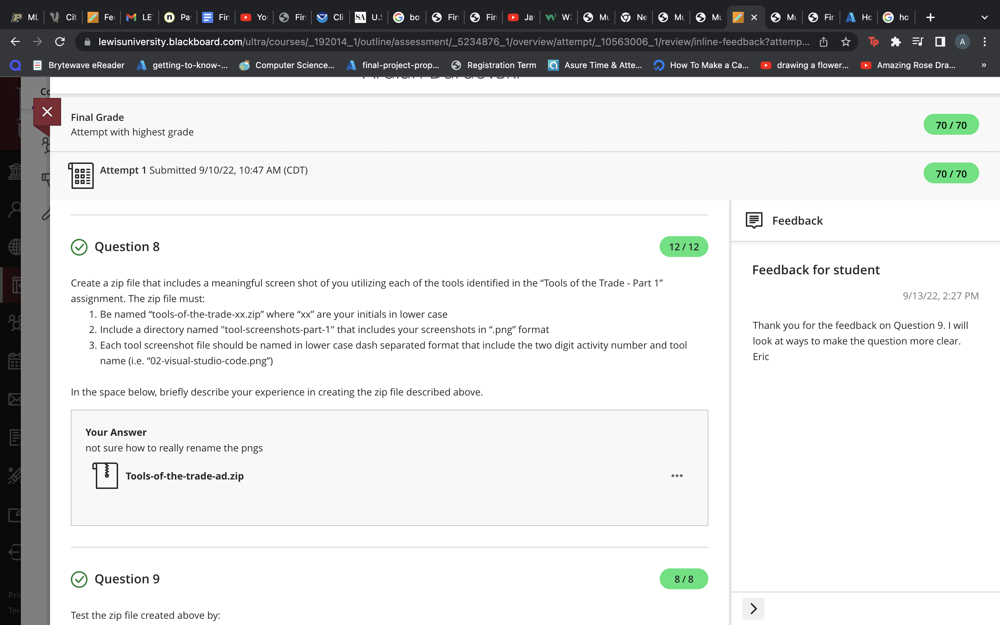
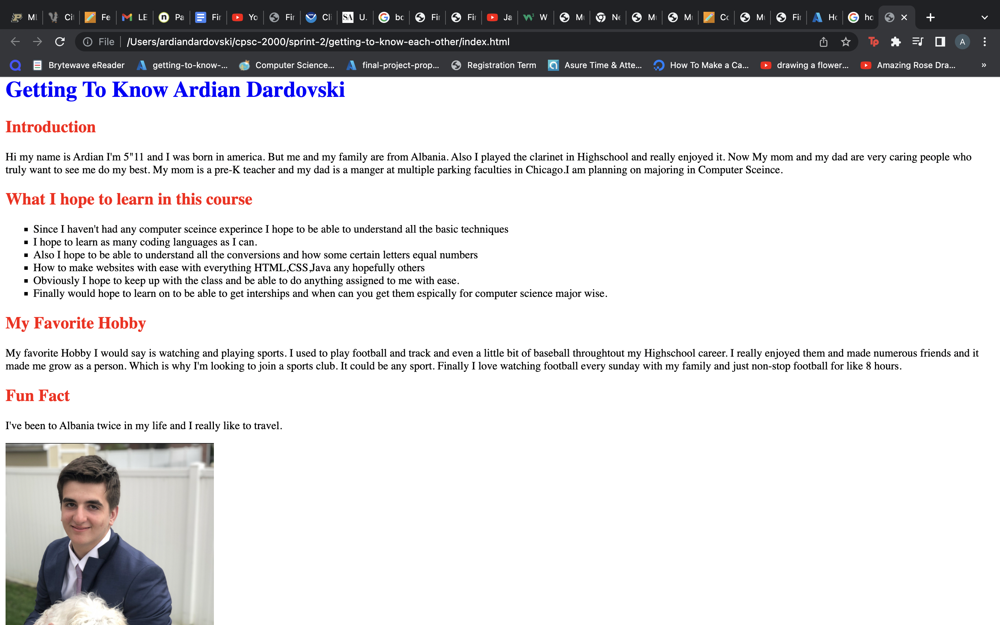
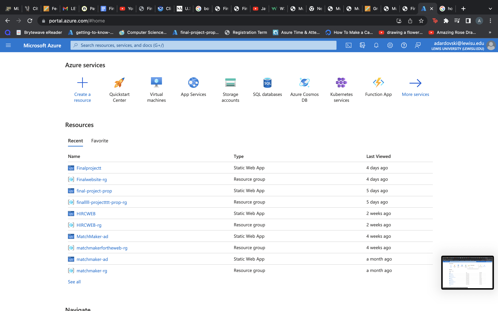

What I learned in Intro to ComputerScience
This website will be recaps of the first four sprints of my intro to ComputerScience class and can help if you are a HighSchool student trying to get a head start of things that you will be learing about and get a student perspective on the class and what material is in the class. Also will have images either of what my code looked like or what project I had to do.
sprint-1 Information
In sprint-1 it is a very laid back sprint because since its an intro class, you will just be doing some downlaods. For example in our first day of class we gotta into our scrum teams which are basically your group for the whole year and a tip is you should really try to get close with them because they can help study and with your projects if you need a quick check. Finally just for this sprint are assigments were basically planning and downloading for the next sprints and for the course. For example we downloaded Visual studio Code. I reccomed building your realtionships to your team and your teacher and always try to particpate. Here a image of submitting a zip file of my screenshots.
sprint-2 information and tips!
In sprint-2 you discuss and get into some coding. Which for me was very exitced espically if you have no experince which is probably why your looking at this website. First we discussed and compared and contrasted differences between each programming language and HTML and CSS will be covering for the semester. Firstly we started with HTML and CSS. Since its for web devlopment and pretty easy to understand study. So I would try to master and always look at W3C schools website I always reccomend studying there. Finally in the sprint we used html mostly and didnt cover CSS as much in the semester. So outside of class defeintly reccomed to cover more of it. But this sprint was just starting to code! Also the cool about computer sceince and web devlopment is you realzize this is your project and you can put and display whatever you want!
Sprint-3 information
Now In sprint-3 everyone is getting used to the pace of the classroom and knowing when to do our assigments and when to study and do all of the activity list and stay focused in the class aswell. In this sprint we are introducded to a very important topic which is sequence, selection and loops. This is basically the basis of everything do and very important to study. So if your a Highschool student I defiently reccomend getting a head start. Also in this sprint we started using a Website hoster and began that which is also very important and which we use the whole semester. So azure was challenging at the start because sometimes you just didnt know why it messed up and that still happens sometimes. But as my teacher Mr.Pogue said its the best thing we got and it used to take 6 months now anyone can do host a website in a matter of minutes. So I hosted my website. In this sprint it was very informational and a lot of important websites and things you need to have meomrized and learend for your whole carrer basically. As a tip I would reccomend to not really stress about it and continue to study and do as your professer does.
Sprint 4 information
The last sprint I will be covering is sprint-4. Now I know there is a total of 9 sprints but after 4 you should get a better good flow of the class room and if you keep studying and keeping with projects you will keep doing good. This sprint for me was very challenging because I felt like it was such a big jump because we started using python for the first time. In my python application it was a simulator on finding your true love and you had to calculate a score. For my personal application that did not happen. I asked for some help but I still couldnt calculate it correctly and got a B on the application. I think it was a big challenge for me because I procrastinated and python is the first programming language ive used and experninced. So it will start of hard but please study more and understand python thats what i did to help me through this and make sure to understand functions and many other python things. To get through intro to ComputerScience you just need to work hard and just continue to study and dont be afarid to ask for help. If you dont wanna trust me you can click the top left button and see how to stop procastinatting and to just give you a genreal understanding about ComputerScience.